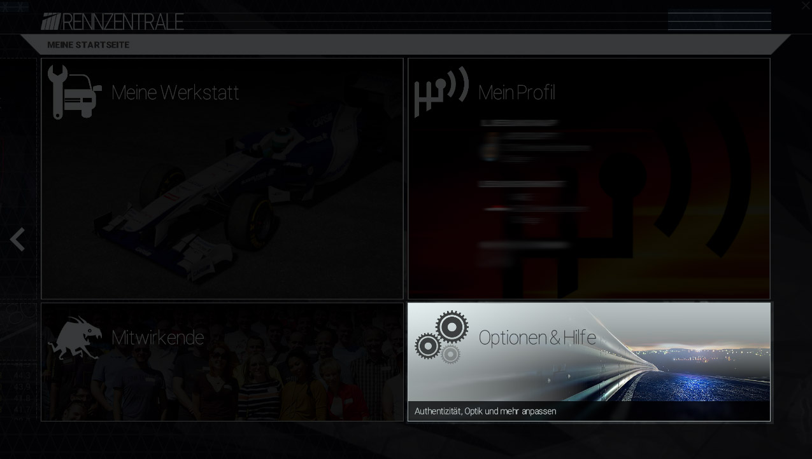
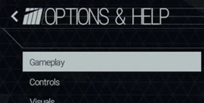
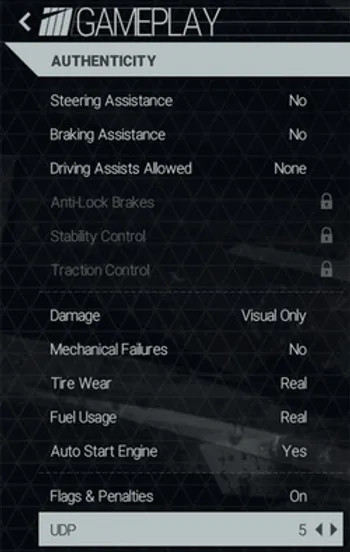
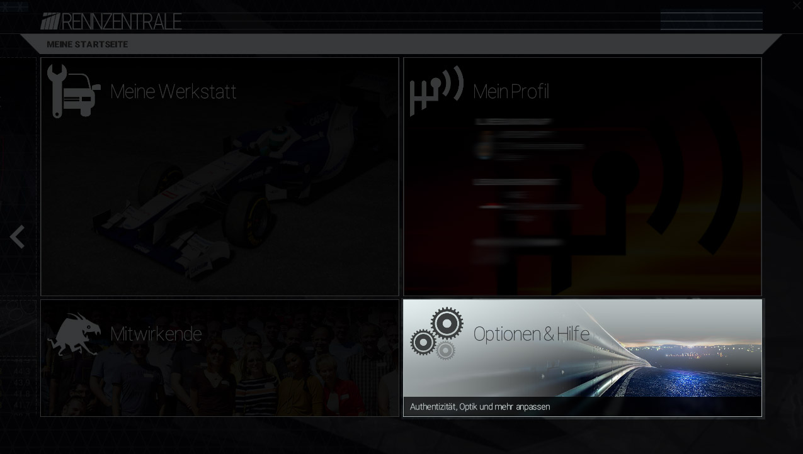
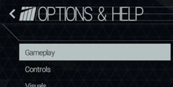
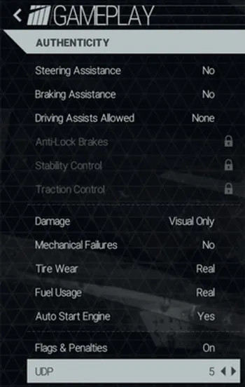

Open the options
Open the submenu gameplay
Enable UDP Telemetry
Set the Option UDP to 1. The number specifies the Speed, 1 is the fastest, 9 the slowest. Try it with a medium Setting "4".
Racing Games bHaptics
Version
Open the options
Open the submenu gameplay
Enable UDP Telemetry
Set the Option UDP to 1. The number specifies the Speed, 1 is the fastest, 9 the slowest. Try it with a medium Setting "4".
